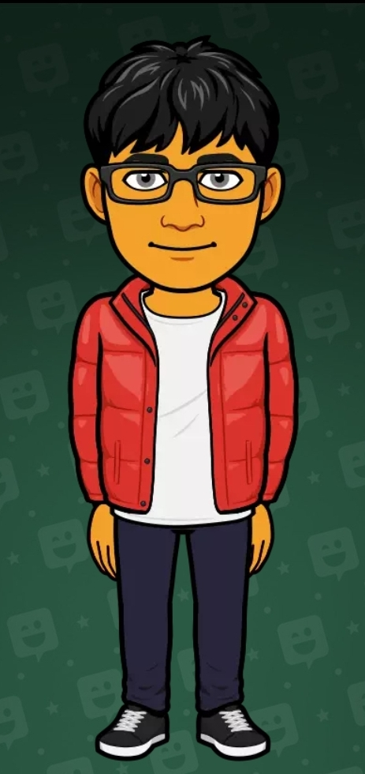

My name is Vernon Ip and I was born in Hong Kong, and moved here when I was 5 years old. I went to False Creek Elementary. I like programming and playing video games. I can code in Java, JavaScript, a little of Python, and VS Basic (even though i hate vsbasic in every way possible). My favorite website is reddit.
I took this course because I originially registered for IT 9 and then I saw what was in the course and I did not want to do what was in that course so I decided to switch to CS 10. So far, What I have learned in this course was how to make games in GameMaker 8.1

my bitmoji uwu